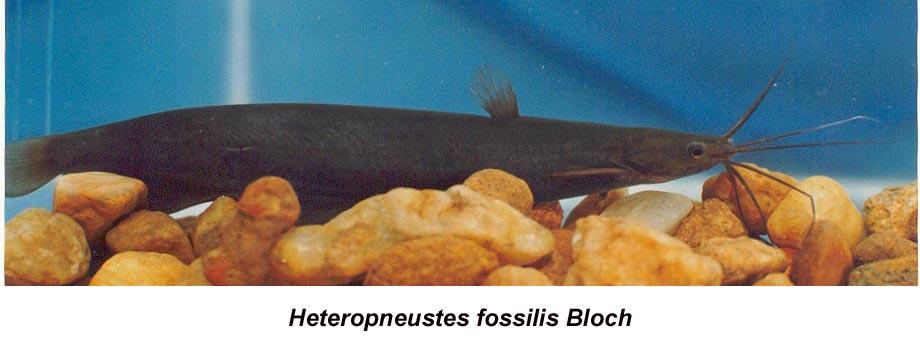

|
DIGITISED INVENTORY OF FRESHWATER FINFISHES AND SHELL FISHES OF INDIA |
Heteropneustes fossilis
Taxonomic
Details
----- Valid Name
----- Classification
----- Synonyms
----- Common Names
Other
Biological Details
----- Habit and
Habitat
----- Morphological
Features
----- Reproductive
Biology
---------- Breeding
season
---------- Breeding techinique
---------- Fishing methods
----- Biology
Stages of development:
Economic
Importance
----- Uses
----- Parts Used
Economic potenial to the country
----- ----- Fishery statistics
Miscellaneous Information
Literature
Name :Heteropneustes fossilis
(Bloch),1794

Family: Heteropneustidae
Classification:
Phylum: Chordata Subphylum: Vertebrata
Class: Actinopterygii Subclass:Neopterygii
Division: Teleostei Subdivision: Euteleostei
SuperOrder: Ostariophysi Order:Siluriformes
SubOrder: N.A.. Family:Heteropneustidae
Subfamily:N.A.
Synonyms: Heteropneustes fossilis (Bloch),1794
Saccobranchus fossilis (Bloch),1794
Silurus fossilis Bloch,1794
Silurus singio Hamilton,1822
HABIT & HABITAT: Warm Water
Distribution :Throughout Indian plains & Andamans.
REPRODUCTIVE BIOLOGY:In singhi, sexes are separate externally, but secondary sexual dimorphism becomes prominent durjng the breeding season. A urinogenital papilla occurs in the male and cloaca is absent, the anal opening distinct and separate. The pointed structure of the male urino-genital papilla suffused with blood becomes more firm and reddish in colour during breeding season. In the case of corresponding females the urinogenital papilla is absent, but a urino-genital sinus in the form of a round raised prominent structure with a slit-like opening in its middle is present. Also, a fully mature female brood has a well rounded abdomen, the fullness of which extends posteriorly past the pelvic fm, while males with corresponding maturity stage look lean. The sign of roughness on the dorsal surface of pectoral fins do not develop in male singhi as found in the case of carp with the event of monsoon (Mookerjee etal 1942; Kamalaveni, 1961; Sircar, 1970; Dehadrai et al., 1973b; Thakur and Das, 1986). The texture of the milt of ripe male is watery.
Breeding season: H. fossilis is a seasonal spawner, breeds in the nature only once during breeding season. Depending on the climatic conditions ofthe locality the breeding season appears during April-July in West Bengal (Ghosh and Kar, 1952), April-June in Orissa (Alikunhi, 1957), March-October in Banga10re (Sundararaj, 1959), July-October in northern India (Qasim and Qayyum, 1961), March-August (Kamalaveni, 1961), Ju\)i-September in Mysore (Ramaswamy, 1962) and throughout the year (Hora and Pil1ay, 1962). Bhatt (1968) has, however, concluded that the August and September are the main months for natural breeding of singhi. Several records are available about the frequency and the period of breeding through artificial fecundation of sing hi. Ramaswamy and Sundararaj (1956) and Pal and Khan (1969) reported the repeated breeding ofsinghi by PG injection during June-September. It is mentioned in CIFRI Annual Report (1969) that one-year old spawner bred several times at an interval of 15 days. Singhi has been made to breed at least 5 times by exposing them to long photoperiod (14 hours/day) during March-July. The early preparatory exposure since February onwards advances the formation of large yolky eggs by as much as 3 months and gives spawning from March itse1f(Sundararaj and Goswami, 1969). Mukhopadhyay (1972) indicated the possibilities of extending the spawning season from June to December, when subjected to long photoperiods.
Breeding techinique: Breeding in confmement by hypophysation may occur regardless of time of the day since the injection time is specified (Sundararaj and Goswami, 1969). The successful hypophysation of this species was achieved for the first time during mid-fifties, with homoplastic pituitary gland given at a dose of 11/2 PG from the male donars or only 1/2 PG from females (Ramaswamy and Sundararaj, 1969). The PG offemale is more potent than that of the male fish (Ramaswami and Sundararaj, 1957). Therelativepotential efficacy ofmarnmalian hypophysial hormones, placental gonadotropins, gonadal hormones and adrenal cortico steroids on ovulation and spawning in hypophysectomized singhi has been found out by Sundararaj and Goswami (19t;.6). The ripening of eggs by inje<;ting 250 IV ofCG (trade name 'Physex') was obtained in singhi (Ramaswamy and Sundararaj, 1957). Mammalian hormones, like DOCA @ 5 mg/fish and HCG at 75-100 IV and PMS at 500 IV have been used for breeding of specimens weighing 60-80g (Sundararaj and Goswami, 1969). The second fraction obtained from fish PG also effected induced spawning in singhi (Sinha,1973). Fish PG extracted by immersing in 1.25% TCA for 6-12 hours and injected to singhi brought about spawning (Ramaswamy, 1962). Prolonged treatment of thiourea on the thyroid and ovary ~singhi is hannful for oocyte development (Mukherjee, 1975). Successful spawning, using PG of Indian major c~ (Pal and Khan, 1969; Khan, 1972) and crude HCG of activity 30 IV 1 mg (Chondar, 1985), was subsequently reported. The routine doseofPG ofImc is 5-10mg/l00g female and 4-5mg/l00g male body weight (CIFRI Workshop Report, 1982) and that of HCG is 10-12mg/ 100g to female and 4-5 mg/l00g body weight to male (Chondar, 1985). The technique of induction of spawning in singhi is similar to that followed in Imc. About 90% success has been reported at the PG dose of 5-10mg/l00g female weight at water temperature 28.3-32.0oc (CIFRI Workshop Report, 1982). The PG extract is usually injected in a single instalment. Spawning takes place 6-17 hours after the injection.
Fishing methods:The castnet, dragnet, gillnet and other devices are also employed round the year for fishing singhi.
BIOLOGY:The respiratory mechanism in singhi performs through
gills, skin and by the help of accessory organs. The accessory respiratory
organs, a so-called tubular lung traversing on either side through the lateral
body muscles from almost tail region, open into the inferior surface of
the pharynx. These tubes retain air and diffuse it to the blood channel. The
morphological and anatomical details as well as the physiological activities of
the accessory organs have been reported by Munshi (1962), Hughes and Munshi
(1973), Hughes et al. (1974), Munshi (1976), Dutta Munshi et al.
(1978) and Jarare (1979). The airlblood pathway measurements, using electron
microscope (Hughes and Munshi, 1973), which appear to be a very thin water blood
barrier, might be probable reason for greater ability of the species to survive
in water without surfacing. Thus, singh is said to be a facultative
air-breather. According to Munshiand Singh (1968) the gill respiratory epithelia
of singhi are better adopted for gas exchange, consuming more of its total
oxygen supply from water (59.17%) than from the air (40.83%) (Hughes and Singh,
1971). Dutta Munshi et al. (1978) reported that the opercular frequency .
Back to Top
Stages of development:CIFRI Workshop Report (1972) and Thakur et al. (1974) described the embryonic and larval development of H.jossilis. Hatching of all the eggs of the same brood in the same rearing media does not take place at a time. It continues for 2 to 6 hours. The period of incubation is within 24 hours at water temperature 25°C (Sundararaj and Goswami, 1969). According to others the incubation period is 20-24 hours at27-30°C (Chaudhuri, 1971), 18-20 hours at26-30°C ((Jian 1972),> 24 hours at 24-26°C in Assam, 18-20 hours at 26-29°C in Bihar(Thakuretal., 1974), and 24-28 hours at 24-26°C (Sarkaretal., 1979). The mortality of the 'developing embryo is high below 22°C and above 28°C. The larvae and the postlarvae of singhi are sluggish and slow-moving as compared to those ofmagur. Embryonic development Time after fertilisation Development features First cleavage dividing the brick-red blastodisc into 2 blastomeres. 4-celled stage 8-celled stage 16-celled stage Morula stage Formation of germinal ring 00 h 30 miD 00 h 45 miD 01 h 00 miD 01 h 20 miD 01 h 30 miD 02 h 00 miD 04 h 00 min Head and tail ends of embryo distinguishable. 05 h 30 min Somites differentiate. 07 h 00 min 12 somites distinctly visible, optic cups appear. 08 h-09 h Otic vesicle appears in 16 somite stage. With the increase in number of somites, embryo gets further elongated till encircles a little more than 2/3way round the yolk-mass and takes 'C'-like appearance. 10 h-12 h 22 somites visible, Kupfer's vesicle appears, pulsating mechanism of heart discernible. 12 h -13 h Kupfer's vesicle disappears, optic cup lens appear. Round caudal end of the embryo getting free from yolk-mass. 14 h 00 min Notochord visible as a tubular structure, which is little dilated at the head region and slightly tapering at the tail-end. 14 h 30 min Frequent twitching movement of the embryo. 16 h 00 min Growing embryo occupies the entire perivitelline space. Twitching movement more vigorous. 17 h 00 min Vitelline membrane weakens. 18 h 00 min Membrane ruptures by culmination of violent jerks and larva emerges out with its tail first. Larval development Newly hatched larva (Fig. 36a). Total length 2.75mm (Pal and Khan, 1969)/2.72mm (Thakur et al., 1974); length up to tip ofnotodtord2. 7lmm; length of yolk-sac 1.10 mm; maximum height of yolk-sac 1.10mm (Thakur et al., 1974). Body laterally compressed and transparent without pigments. Yolk-sac almost round and strikingly large, 42% of the total length of larva, bright green to dark green in colour. Notochordal streak prominent, 26-28 myomeres distinct and another 10-12 apparent in the tail region. Tip of the tail remains round, fin-fold being differentiated indistinctly. Mouth, alimentary canal and gills yet to appear. Inactive larva remain mostly in resting stage. Larva, 8-hr-old (Fig. 36b). Total length 3.80mm; length up to tip of notochord 3.70mm; length up to vent2.l0mm; length of yolk-sac 1.60mm; maximum height of yolk-sac 1.00mm. Body fairly elongated, transparent. Yolk-sac becomes longer and reduced in height, taking oval in shape. Buccal invagination apparent. Alimentary canal emerges as a straight tube on the postero-lateral aspect of the yolk-sac. Anal aperture between 10th and II th myomeres at mid-length of the body yettoopen. 32-33 distinct myomeres, some more indistinct ones towards tail. Heart pulsation commences at I 15-120 beats/ minute. Opercles and barbels not yet appear. Larvae have stricking tendency and prefer darker zones (Thakur et al., 1974). Larva, 1-day-old. Total length 4.6 mm; length up to vent 2.2 mm; yolk-sac length 1.10 mm; maximum height of yolk - sac 0.9 mm. Body elongated considerably, still transparent, except some scanty pigmentation on it. Yolk-sac reduced. Alimentary canal appears as a straight tube, but anal opening still closed. Mouth not yet open, but both the jaws formed, lower jaw moves occassionly. Barbels appear in the form of tiny protuberances. Eyes get darker gradually. Heart pulsates faster, circulatory system established. Notochord deflected upward at the tail-end. Movement of the larva restricted at bottom. Larva, 2-day-old (Fig. 36c). Total length 5.5 mm; length up to vent 2.3 mm; yolk-sac length 1.0 mm and maximum height of yolk-sac 0.8 mm. Body further elongated. Pigmentation denser in the head region, eyes darkly pigmented. Terminal mouth opening established, upper and lower jaw fully formed, lower jaw with minute conical teeth. Functional alimentary canal with peristalsis develops, anal opening differentiates. 4 pairs of tiny barbels appear. Operculum gets formed and fully functional. Urinogenital opening becomes distinct just posterior to anal aperture. Yolk-sac slightly diffused appearing brownish. 41-42 myotomes visible. Heart pulsation rate increased to 155 beats/minute. Fin-fold continuous. Larva moves lashing its tail vigourously. Larva,3-day-old. Total length 5.7 mm; length up to vent 2.4 mm; yolk-sac length 0.9mm and maximum height of yolk- sac 0.7 mm. Body brown in colour. Pigmentation on the body still fewer, but the same increasing faster on the head which looks darker. Barbels further elongate, one side of it is smooth and the other side with a row of elevated points as the precursors of nerve ends. Arterial and venous flow of blood in barbels clearly noticeable. Pectoral fin-but appears on each side as a minute elevation. Yolk-sac further reduced and the resultant space getting filled up by the developing stomach and intestine. Fin-fold still continuous. Larva starts making directive movement. Larva,4-day-old. Total length 5.8 mm; length up to vent 2.5 mm; yolk-sac length 0.8 mm and maximum height of yolk- sac 0.6 mm. Growth rate becomes relatively slower. Pigmentations appear in rows on each myomeres, sides many more melanophores still scattered on the body and some on the fin-fold; he1d and eyes darkly pigmented. Yolk-sac fully absorbed by the end of the 4th day at c 29°C water temperature. Intestinal coiling noticeable. Pectoral fin-buds conspicuous. Embryonic fin-fold still continuous, the differentiation of dorsal and caudal fins apparent. Larva commences feeding. Postlarva, 5-day-old (Fig. 36d). Total length 7.5 mm; length up to vent 2.8 mm. Body colour brown. Pectoral fm differentiated as a flap. Conspicuous thickening of tissue along the base of the future dorsal fin, getting demarcated,from the fin-fold. Rudimentary rays appearing at the future caudal fin. 8 pairs of branchiostegal rays being embeded in the tissue appeared at the floor of the buccal cavity. Larva starts moving sidewise, their vertical movement hardly succeeds. Postlarva, 10-day-old (Fig. 36e). Total length 7.5 mm; length up to the tip of notochord 6.8 mm and length up to vent 3.3 mm. Body becomes blackish since covered with star-like melanophore patches. 53 myomeres, 14 preanal. Dorsal fin formed with 6 branched rays. Fully functional pectoral fin with one spine and a few rays. Anal fin still continuous with embryonic fin-fold. Pelvic fin yet to differentiate. Caudal fin, which is yet to be formed, developed with 8 branched rays, all placed beneath the upward deflection of the notochord. Outline of the brain inside the cranium seen clearly under microscope. Larva becomes very active, can swim in all directions, performs vertical trips very often. Postlarva, 15-day-old. Total length 11.9 mm; length up to the tip of notochord 10.3 mm and length up to vent 4.8 mm. Pigmentation pronounced throughout the body and head. Embryonic fin-fold yet to disappear. Vertebral segmentation of the notochord takes place with distinct neural and haemal spines seen at the caudal region. Dorsal fin assumes adult character with 6-7 rays. Pectoral fin with one strong spine and 7 rays like adult. Ventral fin with 6 indistinct branched rays; and anal, which is yet to be differentiated from the caudal, developed with 47-48 rays. Caudal fin showing 13 rays established articulation with the developing hypurals. Myomeres increased to 55 of which 15 preanal. According to Pal and Khan (1974) in aquaria rearing under laboratory condition, the larva attained 5.2 mm on the 7th day when both the caudal and dorsal fins and lips are formed. On the 8th day the postlarva became 8 mm long showing a full compliment of fins.
Uses: N.A.
Parts Used:
Economic potential to the country
N.A.
Talwar and Jhingran Inland
Fisheries vol. 2 Pg.689